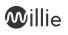
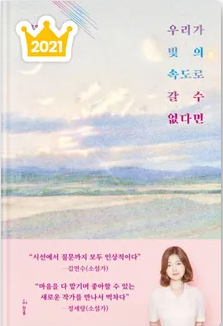

로그아웃

우리가 빛의 속도로 갈수 없다면
김초엽 지음
내서재에 담기
책소개
★우리 SF의 우아한 계보,그 후
지난겨울까지 바이오센서를 만드는 과학도였던 김초엽작가는,이제 소설을 쓴다.관내분실로 한국과학문학상 중단편부문 대상을 받았다.자신만이 그려낼 수 있는 김초엽 특유의 작품세계를 보여주었다. 투명하고 아릅답지만 순진하지만은 않은, 어디에도 없는 그러나 어딘가에 있을 것 같은, 근사한 세계를 손에 잡힐 듯 이야기에 담아냈다.
더보기
한 줄 리뷰
1061